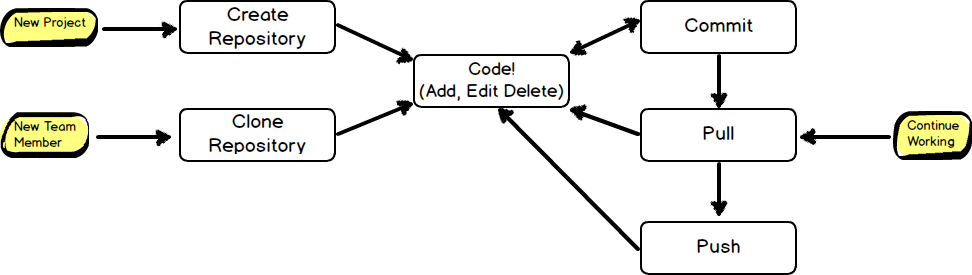
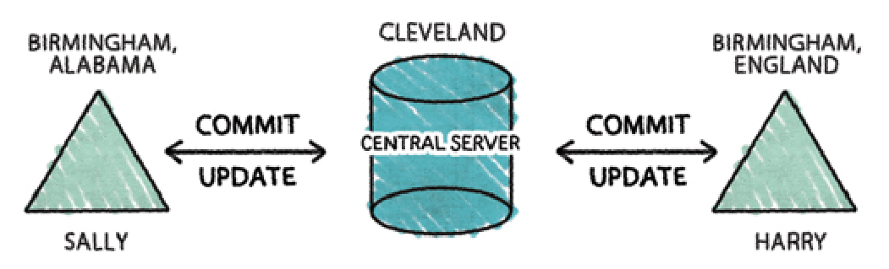
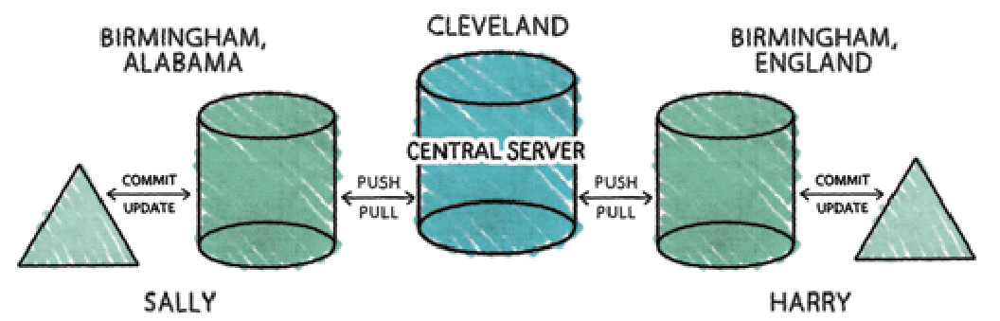
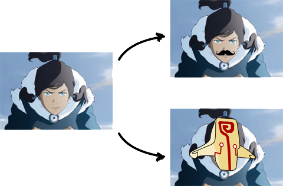
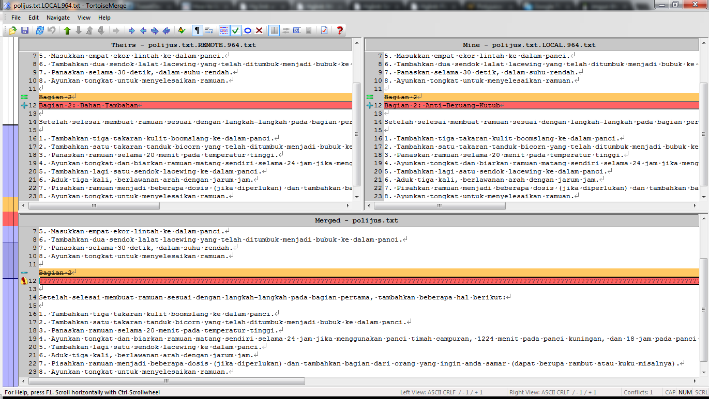
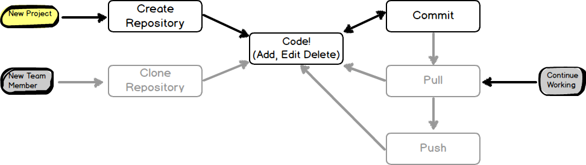
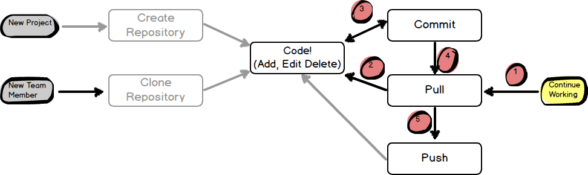
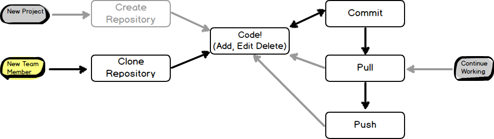
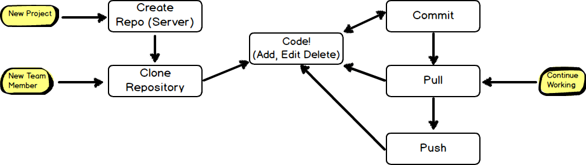

<!DOCTYPE html><html><head><meta charset="utf-8"><meta name="viewport" content="width=device-width, initial-scale=1, maximum-scale=1"><title>TKPPL | Dasar Kontrol Versi</title><link rel="stylesheet" type="text/css" href="bower_components/prism/themes/prism.css"><link rel="stylesheet" type="text/css" href="bower_components/todc-bootstrap-main/dist/css/bootstrap.min.css"><link rel="stylesheet" type="text/css" href="styles/main-presentation.css"></head><body></body></html><nav role="navigation" class="navbar navbar-default"><div class="container"><div class="navbar-header"><button type="button" data-toggle="collapse" data-target="presentation-chooser" class="navbar-toggle"><span class="sr-only"></span><span class="icon-bar"></span><span class="icon-bar"></span><span class="icon-bar"></span></button><a href="index.html" class="navbar-brand">BotNet</a></div><div id="presentation-chooser" class="collapse navbar-collapse"><ul class="nav navbar-nav"><li class="dropdown"><a data-toggle="dropdown" href="#" class="dropdown-toggle">Pilih Presentasi <b class="caret"></b></a><ul class="dropdown-menu"><li><a href="1-Introduction.html">Pengenalan Botnet</a></li><li><a href="2-CaraKerjaBotnet.html">Cara Kerja Botnet</a></li><li><a href="3-PresentasiDenganBespokeJS.html">Presentasi dengan Bespoke.JS</a></li><li><a href="4-SCRUM.html">SCRUM</a></li><li><a href="5-UserStories.html">User Stories</a></li><li><a href="6-Trello.html">Trello dan Bug Reporting</a></li><li><a href="7-PengenalanKontrolVersi.html">Kontrol Versi</a></li><li><a href="8-DasarKontrolVersi.html">Dasar Kontrol Versi</a></li><li><a href="9-Commit.html">Commit</a></li><li><a href="10-LogDanHistory.html">Log dan History</a></li><li><a href="6-TugasBeSpoke.html">Tugas Be Spoke</a></li><li><a href="11-TimeMachine.html">Time Machine</a></li><li><a href="12-PushDanPull.html">Push dan Pull</a></li><li><a href="13-Branching.html">Branching (Percabangan)</a></li><li><a href="14-GitFlow.html">GitFlow Workflow</a></li></ul></li></ul></div></div></nav><article id="presentation"><section><h1>Dasar Kontrol Versi</h1><p>Teknik Kolaborasi TI</p></section><section><h2>Bekerja dengan Kontrol Versi (Git)</h2></section><section><h2 class="bullet">Wait, WHAT?!</h2><ul><li>Repository?</li><li>Create?</li><li>Clone?</li><li>Commit?</li><li>Pull?</li><li>Push?</li></ul></section><section><h2>Repository</h2></section><section><h2>Repository</h2><blockquote>Tempat penyimpanan <strong>seluruh</strong> data
yang akan diatur oleh Kontrol Versi. Seluruh file
maupun struktur direktori yang akan dikontrol 
disimpan di sini.
</blockquote></section><section><h2 class="bullet">Repository</h2><hr><ul><li>Selain menyimpan struktur data, juga menyimpan <strong>sejarah</strong> data.</li><li>Konsekuensi: <strong>tidak ada data yang benar-benar dihapus</strong>.</li><li>Penghapusan malah akan <strong>memperbesar</strong> ukuran repository. Kenapa?</li><li>Pada Kontrol Versi terpusat, hanya terdapat 1 repository yang digunakan semua orang.</li><li>Pada Kontrol Versi terdistribusi, bisa saja setiap orang memiliki repository masing-masing.</li></ul></section><section><h2>Repository (Kontrol Versi Terpusat)</h2></section><section><h2>Repository (Kontrol Versi Terdistribusi)</h2></section><section><h2>Create (Init)</h2><blockquote>Perintah untuk membuat repository baru. Biasanya hanya
dilakukan sekali saja, di awal mulai proyek.
</blockquote></section><section><h2>Clone</h2><blockquote>Perintah untuk mengambil kopi repository lain. Clone 
dapat dilakukan terhadap repository manapun, selama
alamat repository diberikan dengan benar.
</blockquote></section><section><h2>Commit</h2><blockquote>Mencatat dan menyimpan perubahan data yang ada ke dalam repository.
</blockquote></section><section><h2 class="bullet">Commit</h2><hr><ul><li>Melakukan modifikasi terhadap repository secara langsung.</li><li>Perintah commit bersifat <strong>atomik</strong> untuk memastikan integritas repository.</li><li>Biasanya pengguna harus memberikan catatan (log) perubahan.</li><li>Catatan commit disimpan dalam sejarah.</li></ul></section><section><h2>Pull / Update</h2><blockquote>Mengambil versi data terbaru dari repository luar (remote)
ke repository lokal. Dengan kata lain: mengambil
versi data terbaru dari server.
</blockquote></section><section><h2 class="bullet">Pull / Update</h2><hr><ul><li>Terutama digunakan untuk sinkronasi dua repository</li><li>Lokal mengambil perubahan terbaru dari remote</li><li>Remote biasanya merupakan repository awal yang di-clone oleh lokal</li><li>Jika local dan remote sudah tidak sama (sama-sama berubah)?</li></ul></section><section><h2>Branch (Cabang)</h2><blockquote>Branch merupakan operasi yang dilakukan ketika ingin
mencoba hal-hal yang berbeda untuk diaplikasikan terhadap
data yang sama.
</blockquote></section><section><h2>Branch</h2></section><section><h2 class="bullet">Branch</h2><hr><ul><li>Satu repository bisa memiliki banyak branch</li><li>Ketika melakukan clone, secara tidak langsung kita juga membuat branch</li><li>Secara teknis, hasil clone bukanlah branch, secara konsep <strong>mirip</strong></li><li>Penggabungan branch dilakukan dengan merging (?)</li></ul></section><section><h2 class="bullet">Kegunaan Branch</h2><hr><ul><li>Eksperimen (kalau tidak cocok tinggal buang branch-nya)</li><li>Menjaga agar kode utama bersih ketika bekerja</li><li>Detailnya akan dijelaskan pada topik 5</li></ul></section><section><h2>Merge</h2><blockquote>Operasi penggabungan dua cabang secara otomatis (jika bisa).
Ketika operasi tidak dapat dijalankan secara otomatis, maka kita harus
melakukan merge secara manual.
</blockquote></section><section><h2>Merge (secara Manual)</h2></section><section><h2>Push</h2><blockquote>Mengirimkan perubahan pada repository lokal ke
repository remote. Dengan kata lain: mengirimkan
data terbaru ke repository remote.
</blockquote></section><section><h2>Kembali ke gambar awal...</h2></section><section><h2>Jika baru memulai proyek...</h2></section><section><h2>Jika ingin melanjutkan pekerjaan...</h2><p>PS: 4 dan 5 opsional (jika bekerja pada repo utama)</p></section><section><h2>Jika baru bergabung dalam tim...</h2></section><section><h2>Atau bisa juga...</h2></section><section><h2 class="bullet">Tentang Alur Kerja</h2><hr><ul><li>Yang dijelaskan hanyalah salah satu (dua) alur kerja</li><li>Alur kerja setiap tim berbeda!</li><li>Gunakan yang paling cocok untuk tim anda.</li></ul></section><section><h2>Pertanyaan?</h2></section></article><script src="bower_components/bespoke.js/dist/bespoke.min.js"></script><script src="bower_components/bespoke-bullets/dist/bespoke-bullets.min.js"></script><script src="bower_components/bespoke-scale/dist/bespoke-scale.min.js"></script><script src="bower_components/bespoke-hash/dist/bespoke-hash.min.js"></script><script src="bower_components/bespoke-progress/dist/bespoke-progress.min.js"></script><script src="bower_components/bespoke-state/dist/bespoke-state.min.js"></script><script src="bower_components/prism/prism.js"></script><script src="bower_components/prism/components/prism-bash.min.js"></script><script src="scripts/main.js"></script><script src="bower_components/jquery/jquery.min.js"></script><script src="bower_components/todc-bootstrap-main/dist/js/bootstrap.min.js"></script>